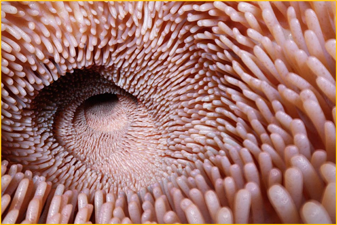

I villi intestinali sono piccole estroflessioni dell'intestino tenue, che aumentano la superficie di assorbimento e permettono il passaggio dei nutrienti nel sangue poiché ricchi di vasi sanguigni.

Le sostanze nutritive del chilo quindi, passano poi nel sangue, che le distribuisce a tutte le cellule dell'organismo.